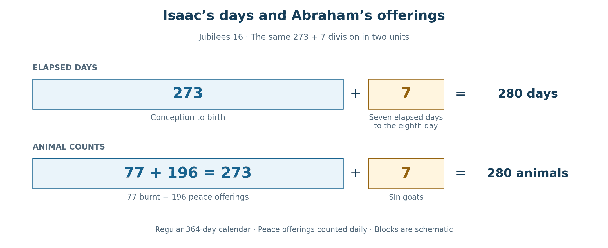
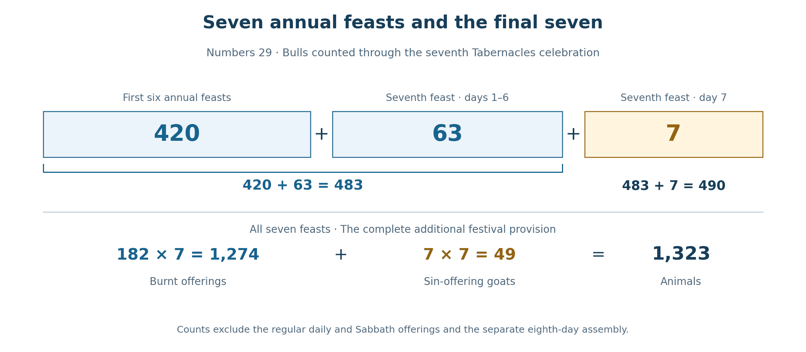
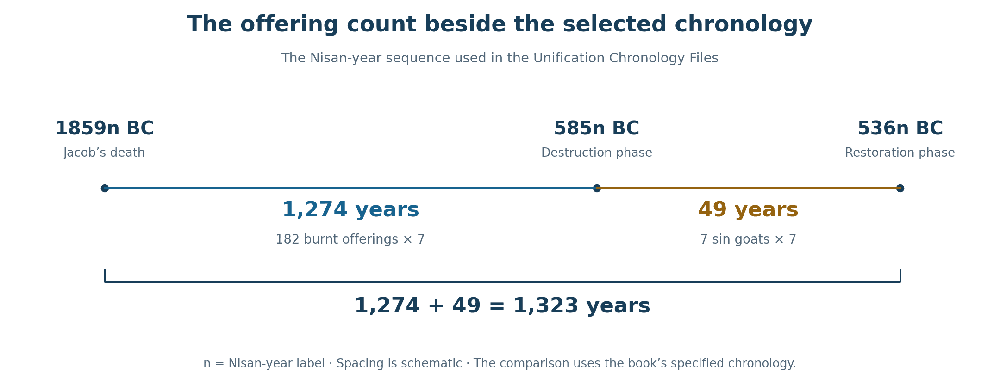

Book 1 · The Cross at the Center of Time · Chapter 6 of 18
Days, offerings, and the promise gathered into Christ
“The seven good cows are seven years, and the seven ripe heads of grain are seven years. The dreams have the same meaning.”
— Genesis 41:26
The calendars considered in Chapter 5 have a further witness in the offerings of the altar. Here the language of time takes living form. Animals are counted, days are appointed, and the cycle returns until its fulfillment in the Lamb of God. I believe that the relationship reaches deeper than the practical need to schedule worship. The numbers of the offerings themselves participate in the testimony.
Joseph gives us a beginning. In Pharaoh’s dream, cows and heads of grain represent years. A scene drawn from the life of Egypt becomes a disclosure of its future. God places a period of time within an image and gives Joseph the understanding to read it.1 From this explicit example, I approach the sacrificial lists with a question: might the creatures offered at appointed times also bear the measure of those times?
The Book of Jubilees helps us follow that possibility. Its account of Isaac brings a pregnancy, a covenant sign, a festival, and a count of offerings into one narrative. Numbers then supplies a canonical offering list whose proportions correspond to the 364-day year. I read these relationships in the light of the Cross, where the many sacrifices find their fulfillment in one Person.
This is the perspective from which I follow John. The Word through whom all things came into being enters His creation as the Lamb who takes away sin. If time itself belongs to that creation, its divisions also belong within the scope of His work. The altar may therefore teach us something about the redemption of time, as well as about the events that take place within it.
In this chapter
Living creatures and the measure of forgiveness
Joseph’s interpretation gives us an express connection between animals and years. Jacob’s reconciliation with Esau places another carefully numbered company of animals within a story of estrangement, fear, and mercy.
Before meeting his brother, Jacob sends a gift ahead in separate herds. Genesis names the animals and their numbers. Among them are 200 female goats, 20 male goats, 200 ewes, 20 rams, 40 cows, and 10 bulls. These groups total 490 animals belonging to the clean livestock kinds.2
Table 1 — The clean livestock in Jacob’s gift
| Kind | Females | Males | Total |
|---|---|---|---|
| Goats | 200 | 20 | 220 |
| Sheep | 200 | 20 | 220 |
| Cattle | 40 | 10 | 50 |
| Total | 440 | 50 | 490 |
The gift also includes camels and donkeys. Their stated numbers add 60 to the ledger, making 550 in the explicitly numbered groups; the camel young are mentioned without a separate number. The complete physical company therefore cannot be counted simply as 550. The clean livestock subtotal of 490, however, is explicit and unaffected by that uncertainty.
These animals are a gift to a brother. Their part in the narrative is reconciliation, and it is there that I hear the number speak. Jacob hopes to find acceptance after the wound of his earlier deception. His gift goes before him while he waits to discover whether the brother he wronged will receive him.
The same family of numbers appears in Christ’s teaching on forgiveness. The Berean Standard Bible renders His answer to Peter as “seventy-seven times,” with “seventy times seven” given as an alternative. Both readings have a place in this inquiry: 77 and 490 recur in the surrounding patterns. The command gives forgiveness a fullness that cannot be reduced to keeping score.3
Within the Masoretic Text (MT) chronology used in this book, Jacob’s flight is placed in 1929 BC, at age 77; his return follows twenty years later, in 1909 BC. Another thirty-three years lead to his entry into Egypt in 1876 BC. There his family is preserved through the famine that Joseph had seen represented by cows and grain. The number in Jacob’s gift thus stands within a family history already joined to the biblical language of animals and years.4
I see the reconciliation of the brothers as one of the small scenes through which the larger purpose becomes visible. The wounded family is gathered again. The 490 clean animals in the gift recall Daniel's seventy sevens, a period directed toward ending transgression and atoning for sin. Christ will bring that work to its center. The relationship I am tracing is a prophetic reading of the whole, beginning with the particulars Scripture has preserved.
Isaac’s days at Abraham’s altar
Jubilees retells the history from Creation onward through weeks, weeks of years, and jubilees. Its 364-day calendar gives each year fifty-two complete weeks. I use it here as an ancient witness to a way of reading sacred history through calendrical order. Its voice belongs among the traditions examined in this book, while the biblical texts continue to supply the foundation.5
Chapter 5 introduced its account of Sarah’s conception and Isaac’s birth. Jubilees places the conception in the middle of the sixth month and the birth in the middle of the following third month. Read at corresponding day positions—6/15 to the following 3/15—the interval contains nine months in the repeating arrangement of thirty, thirty, and thirty-one days. It is three quarters of the regular year:
91 + 91 + 91 = 273 days.
Isaac is then circumcised on the eighth day. Counting his birth as the first day, circumcision follows seven elapsed days later:
273 + 7 = 280 days.
The first interval measures conception to birth; the second completes the movement to the covenant sign. These are the calendar’s proportions applied to the narrative. The same-day-position reading and the regular, uninterrupted 364-day arrangement are the conditions of the calculation.6
Jubilees also describes Abraham’s first celebration of Tabernacles. Its offering list contains eleven burnt offerings each day: two oxen, two rams, and seven sheep. A goat is added as a sin offering. The accompanying peace or thank offerings comprise four groups of seven animals: seven rams, seven kids, seven sheep, and seven he-goats. Reading that second list as part of the daily festival provision gives twenty-eight peace offerings each day.7
Table 2 — Abraham’s seven-day offering count
| Offering group | Per day | Seven days |
|---|---|---|
| Burnt offerings | 2 + 2 + 7 = 11 | 77 |
| Peace or thank offerings | 7 + 7 + 7 + 7 = 28 | 196 |
| Subtotal | 39 | 273 |
| Sin-offering goats | 1 | 7 |
| Complete count | 40 | 280 |
The two sequences now stand together. The calendar gives 273 days to birth and another seven to circumcision. The offerings give 273 animals in the burnt and peace categories and another seven in the sin-offering category. The numerical correspondence is exact within the stated reading:
273 days + 7 days; 273 animals + 7 animals.


There is a feature of the narrative that deepens the relationship. After summarizing the conception, birth, and circumcision, Jubilees returns to the angelic visit in the seventh month. Sarah is still pregnant when the visitors find her. Abraham’s festival belongs to that setting: he rejoices in the promised child and the descendants who will come through him.8
The offerings therefore anticipate the completion of what has begun. Abraham worships while the child is still hidden in the womb. In the correspondence I am tracing, the offering count represents the full span from conception to the covenant sign, even while Sarah is still pregnant. Promise is given a completed measure before human sight can see the promised result.
That is especially fitting to the inquiry of this book. We experience the promise and its fulfillment in sequence. God knows the whole. I believe the completed work of Christ can give the earlier sign its form, so that what appears to us as a prediction may also be the imprint of the fulfillment upon the past. Isaac’s pattern offers a small, tangible way of contemplating that possibility.
The promise beneath the booths
Leviticus tells Israel to dwell in booths so that later generations will remember the dwellings of their ancestors when God brought them out of Egypt. Jubilees carries the festival’s story farther back, to Abraham’s joy over the promised son. The two settings place shelter, dependence, and divine faithfulness within the same festival.9
Sarah’s womb provides a further image for meditation. The child is sheltered where ordinary expectation had ceased to look for life. Abraham’s household rejoices because God has made room for the promise within human weakness. When I read the booths beside that pregnancy, I see the dwelling of promise before I see the dwelling of a nation.
John preserves Christ’s declaration that Abraham rejoiced to see His day. I do not need to identify that saying exclusively with this episode in Jubilees to hear the affinity. Abraham’s joy looks beyond the limits of his own life, and the promised son opens a history whose blessing reaches the nations.10
The figures within the offering count strengthen the meditation. The seventy-seven burnt offerings recall the language of abundant forgiveness. The 196 peace offerings form 14 × 14, while the complete count forms 40 × 7 = 280. Their primary force here comes from their place within the larger 273 + 7 relationship. The birth of the promised son and his reception of the covenant sign supply the narrative that gives the numbers their subject.
Isaac’s body bears the sign on the eighth day. Later, the story of the offered son will bring Abraham to another place where life is received through trust in God. From the perspective of the Cross, I see these scenes leaning toward the Son in whom promise, sacrifice, and life are gathered. The festival’s joy already belongs to that movement.
Seven and thirteen in the ordering of creation
The calendar itself joins seven and thirteen. Thirteen weeks make a quarter of ninety-one days; four such quarters complete the year:
7 × 13 = 91; 4 × 91 = 364.
Jubilees also places a relationship between the first and second weeks within its account of Adam and his wife. Its opening creation account locates humanity within the sixth day. The following chapter distributes the presentation and naming of the animals across the first five days of the second week, and the woman’s presentation to Adam follows on the sixth day of that week: Day 13 in the continuing count.11
Table 3 — Two weeks in the creation account of Jubilees
| Position | Narrative feature |
|---|---|
| Day 6 | Humanity in the first week’s creation account |
| Day 7 | The first Sabbath |
| Days 8–12 | Animals brought to Adam and named |
| Day 13 | The woman presented to Adam in the second week |
Jubilees 3:8 deliberately holds the two weeks together: Adam and his wife belong to the first week’s creation, while her presentation belongs to the second. The distinction lets us speak of one union disclosed across two corresponding days. Day 6 and Day 13 stand seven elapsed days apart.
The same text explicitly compares the twenty-two works of creation with twenty-two ancestral heads from Adam to Jacob. Here created works and generations are brought into numerical correspondence by the ancient author himself. This gives the wider reading a literary setting: creation can be contemplated again in the unfolding of the family through time.12
I return to these features when the bulls of Tabernacles descend from thirteen to seven. The offering sequence moves backward across the same numbered positions that lead from the first Sabbath to the second week’s sixth day. Days 7 through 13 comprise seven positions, although their endpoints are six elapsed days apart. The shape invites a reading of return: from the disclosed union toward the rest out of which the next week unfolds.
For me, that backward movement belongs within the book’s larger contemplation of the Cross. Redemption reaches into what has gone before. The last Adam receives and restores what the first Adam lost. I suggest that this may describe an action upon creation and time themselves, whose full extent is known to God. The numerical pattern gives that contemplation a form we can examine; the proposed cosmic reality belongs to the theological understanding through which I read it.
The broader genealogical patterns of Jubilees require their own chronological treatment. Some births are assigned to a seven-year week rather than to one specified year. I preserve those ranges when developing their larger relationships in the Unification Chronology Files. Here the complete weeks, the two creation settings, and the explicit twenty-twofold comparison provide the immediate setting for the offerings.13
The numbers of the feast
Numbers 29 prescribes a changing count of bulls across the seven days of Tabernacles. The rams and lambs remain constant. Each day also has one goat as a sin offering.14
Table 4 — The additional festival offerings for the seven days of Tabernacles
| Festival day | Bulls | Rams | Lambs | Burnt subtotal | Sin goats |
|---|---|---|---|---|---|
| 1 | 13 | 2 | 14 | 29 | 1 |
| 2 | 12 | 2 | 14 | 28 | 1 |
| 3 | 11 | 2 | 14 | 27 | 1 |
| 4 | 10 | 2 | 14 | 26 | 1 |
| 5 | 9 | 2 | 14 | 25 | 1 |
| 6 | 8 | 2 | 14 | 24 | 1 |
| 7 | 7 | 2 | 14 | 23 | 1 |
| Total | 70 | 14 | 98 | 182 | 7 |
The burnt offerings total 182. With the seven sin-offering goats, the festival count is 189. These are the additional offerings of the seven-day feast; the regular daily offerings, any coinciding Sabbath offerings, and the distinct eighth-day assembly are outside this particular table. Keeping the prescribed categories visible allows each part to contribute its own measure.
The burnt subtotal immediately gives 182 = 364 ÷ 2. One feast carries the number of days in half a regular Enochian year. Over seven annual celebrations, its burnt offerings total:
182 × 7 = 1,274.
The same number expresses three and a half years of 364 days:
3½ × 364 = 1,274.
Across seven years there would be 1,274 animals in this category. Read as a temporal figure, their number corresponds to 1,274 days, or three and a half regular Enochian years. The equality concerns the counts; the passage from animals to days is the interpretive step. This is the solar counterpart of the 1,260 = 3½ × 360 relationship examined in Chapter 5.
The bulls disclose a second relationship. Their total is seventy per feast, and across seven annual feasts they number 70 × 7 = 490. That total also has a precise final division. The first six annual feasts supply 420 bulls. The first six days of the seventh feast supply another sixty-three. Before the last day, therefore, the running count is 483. The final seven bulls complete 490.15


Daniel’s seventy sevens contain the familiar division of sixty-nine sevens and one further seven: 483 + 7 = 490. I see a corresponding shape in the offering sequence. Numbers supplies the animals and their arrangement; Daniel supplies the prophetic period. Their relationship lets the altar participate in the contemplation of the years directed toward atonement and fulfillment.
The goats remain part of the complete count. Across the same seven annual festivals they number 7 × 7 = 49, bringing the whole to:
1,274 + 49 = 1,323.
This distinction will matter when we turn to the chronology of exile and return. The burnt offerings and the sin offerings can be read separately because the text distinguishes them, and together because they belong to one festival provision.
The wider seventh-month count
There is also a larger setting for the 280 encountered in Abraham’s celebration. In the Wednesday-start 364-day calendar, the first day of the seventh month falls on Wednesday. The first twenty-two days therefore contain three Sabbaths. Counting the animals prescribed in Numbers 28–29 across that whole window brings together the daily service, the Sabbaths, the New Moon, Trumpets, Atonement, the seven-day feast, and the eighth-day assembly.16
Table 5 — The seventh month from day 1 through day 22
| Offering provision | Animal count |
|---|---|
| Daily offerings, 2 × 22 | 44 |
| Additional Sabbath offerings, 2 × 3 | 6 |
| New Moon | 11 |
| Trumpets | 10 |
| Day of Atonement | 10 |
| Seven days of Tabernacles | 189 |
| Eighth-day assembly | 10 |
| Total | 280 |
Here the total includes the sin-offering goats. New Moon and Trumpets remain separate provisions even though they fall on the same date. The 280 belongs to this stated calendar arrangement; a twenty-two-day window containing four Sabbaths would add two lambs and total 282.
The comparison with Abraham’s 280 is therefore specific. One count belongs to the seven-day celebration described in Jubilees. The other belongs to the larger seventh-month provision in Numbers, read within the three-Sabbath calendar setting. I find their meeting significant because both gather the festival around a complete offering count, while preserving the differences in their composition.
The eighth day and the completed measure
The wider provision in Numbers contains another connection with Isaac’s days. The full count through the eighth-day assembly is 280 animals. That assembly contributes ten: one bull, one ram, seven lambs, and one goat. Before its distinct provision is added, the count is therefore:
280 − 10 = 270 animals.
This 270 is a subtotal of the full twenty-two-day ledger, including the daily lambs on day 22. It excludes only the assembly’s ten additional animals.
For this comparison, I group the bull, ram, and goat together, then count the seven lambs as the closing group. The three animals bring the earlier total to 273:
270 + 1 bull + 1 ram + 1 goat = 273 animals.
The seven lambs complete the measure:
273 + 7 = 280 animals.
The three numbers introduced in Chapter 5 now appear within the altar’s own provision: 270 = 9 × 30, 273 = 3 × 91, and 280 = 40 × 7. Here they arise by grouping the animals prescribed within the stated seventh-month window.16
I see this as a further meeting of the witnesses. Isaac’s days move from 273 to 280 at the covenant sign. Abraham’s offerings give the same division under the daily reading already explained. Within Numbers, the seven lambs of the eighth-day assembly likewise complete a count of 273. Each setting keeps its own composition and story, while the repeated measure draws my attention toward their shared fulfillment in Christ.
Over seven annual repetitions, the count is 280 × 7 = 1,960 animals. Read as a figure of years, that number corresponds to forty jubilees of forty-nine years. Within this book’s chosen chronology, the interval from Jacob’s flight in 1929 BC to AD 32 has that same length. AD 32 is the proposed setting of the Tabernacles before the preferred AD 33 Passion. The historical assignment remains conditional; the civil-year arithmetic, which has no year zero, is exact: 1,929 + 32 − 1 = 1,960.17
Exile and the return of worship
The offerings also invite a comparison with Israel’s broken and restored worship. I use the MT framework established in the Unification Chronology Files, with the Exodus at 1446 BC and Jacob’s entry into Egypt at 1876 BC. Within that framework, the complete seven-feast count of 1,323 supplies several exact intervals.18
Table 6 — Jacob and the exile and restoration dates used in this chronology
| Beginning | Interval | Endpoint |
|---|---|---|
| Jacob’s flight, 1929 BC | 1,323 years | 606 BC, the selected captivity beginning |
| Jacob’s return, 1909 BC | 1,323 years | 586 BC, the Temple-destruction year label |
| Jacob’s death, 1859 BC | 1,323 years | 536 BC, the selected restoration year label |
| 606 BC | 70 years | 536 BC |
| 586 BC | 70 years | 516 BC, the Temple-completion year label |
The table uses the book’s selected year labels. Reconstructions of the historical events can differ by a year, and the beginning of captivity and the destruction of the Temple are distinct events. The two seventy-year lines consequently describe different spans. Their particular alignments are part of the chronology being examined, with the arithmetic stated openly.
The difference between the altar’s restoration and the Temple’s completion is especially important. Ezra 3 describes Jeshua and Zerubbabel restoring the altar and its offerings before the Temple’s foundation had been laid. Tabernacles was celebrated during that initial restoration. Worship therefore resumed before the rebuilt house was finished.19
A more closely specified version of the Jacob-death line preserves the two components of the sacrificial count. In the Nisan-year labels used by the Unification Chronology Files:
1859n BC to 585n BC = 1,274 years.
585n BC to 536n BC = 49 years.
1859n BC to 536n BC = 1,323 years.
Here n denotes a year reckoned from Nisan. The corresponding destruction and restoration ranges are displayed in the Files as 586t/585n BC and 537t/536n BC, where t denotes the Tishri reckoning. The components must be compared within the same reckoning: 586t to 537t gives forty-nine years, as does 585n to 536n. This lets the 1,274 + 49 division remain exact without exchanging neighboring labels midway through the calculation.20


I read the relation as a movement from the patriarch’s death through the national wound toward renewed worship. The goats, which complete the count, stand within that reading beside the period associated with loss and restoration. This is one way the altar’s numbers can be contemplated as a figure of years awaiting reconciliation.
If forty-nine annual feasts are taken as the model of an interruption, their seven yearly sin-offering goats would number 49 × 7 = 343, or seven cubed. That is the count implied by the model. Determining exactly how many historical festivals went unobserved would also require the dates of the last and first celebrations; the biblical narrative does not supply such an inventory.21
What it does supply is the return to the appointed number. Ezra 3:4 says that the offerings were made “daily based on the number prescribed for each day.” The restored worship resumes the ordered sequence. In my reading, the same order that had accompanied Israel before the rupture receives the people again on the other side of it.
Later, when Ezra’s own company arrives, its offering includes twelve bulls, ninety-six rams, seventy-seven lambs, and twelve goats, a total of 197 animals. The seventy-seven belongs specifically to the lambs. It recalls Abraham’s seventy-seven burnt offerings in the comparison developed here, within a scene once again concerned with a people returning to God.22
I see restoration in that recurrence. The number does not have to be described as a surviving account of the returnees’ calculations for it to contribute to the larger testimony. God’s sovereignty over the narrative can hold together relationships that its human participants did not fully see. That conviction is central to the way I approach the traditions and calendars throughout this book.
Levi and the measure of a life
Jubilees supplies another offering count when Jacob celebrates at Bethel and Levi serves as priest. The burnt offerings listed in chapter 32 total 119 animals; the accompanying peace offerings total eighteen. Read together as the daily provision, they give 119 + 18 = 137. Exodus 6:16 gives Levi’s lifespan as 137 years.23
The correspondence brings the priest, his life, and the offerings he serves into one numerical field. It offers another instance of the reading pursued here: a life measured in years can be represented beside a sacrificial count. The count does not by itself tell us how much of that relation the ancient writer intended. I receive it within the wider pattern in which the priesthood and its times find their fulfillment in Christ.
The MT dates used in the Unification Chronology Files also disclose a related arrangement. Jacob’s birth in 2006 BC, his flight in 1929 BC, his death in 1859 BC, and Levi’s death in 1782 BC divide a 224-year span into:
77 + 70 + 77 = 224 years.
The first two parts complete Jacob’s 147 years; the last reaches Levi’s death. From that endpoint to the Exodus in 1446 BC are 336 years, equal numerically to forty-eight weeks of seven days, or two sets of twenty-four weeks. These dates belong to the specified chronological reconstruction. Their symmetry supplies a further comparison between patriarchal lives and the ordering of priestly time.24
I leave the wider chronological structures for their fuller treatment in the Files and later chapters. The purpose here is to let the recurring language become recognizable. Days, lives, generations, and offerings can carry related proportions while retaining the particulars of the stories to which they belong.
The altar at the center of time
The relationships examined here begin with things that can be counted. Abraham’s offerings, under the daily reading of the peace-offering list, give 273 + 7. The additional seven-day offerings of Numbers give 182 + 7. Seven annual repetitions produce 1,274 + 49, and the bulls reach 490 through a final division of 483 + 7. The larger seventh-month provision gives 280 within its stated calendar arrangement, and its eighth-day completion also lets us follow the progression from 270 through 273 to 280.
These counts make the 364-day calendar a fruitful participant in the inquiry. Its half-year of 182 days and three-and-a-half-year span of 1,274 days appear in the proportions of the biblical altar. I take that correspondence as part of the providential gathering this book seeks to show. The lunar reckoning retains its place, and the common 360-day form lets the related periods speak together, as Chapter 5 explained.
The many offerings finally lead me back to the one sacrifice. Hebrews describes the repeated sacrifices beside Christ’s offering of Himself, and the Revelation shown to John places the slain yet living Lamb at the center of the heavenly scene.25 The altar’s long succession of days and deaths finds its meaning there.
From our place within history, the sacrifices come first and the Cross follows. From the perspective I am exploring, the Cross may also be the source from which their harmony receives its order. I propose that Christ’s work can act upon the past as well as the future, remaking creation from its center. The signs would then anticipate Him because the reality of His work already governs the times that bear them.
This proposal includes the possibility of a literal transformation of time, beyond what human observation can recover. We know the history given to us; we cannot compare it with the full course of what would have been without His work. The numerical correspondences do not measure that hidden action. They are among the visible relationships through which I seek to contemplate it.
As I try to follow the eagle’s sight, I see the feast, the priest, the child of promise, the exile, and the returning people drawn toward the Lamb. Their times arrive with them. The Cross stands at the center of that gathering, where the promise of God is fulfilled and creation’s wound is answered.
The next chapter returns to the relationship between the 364-day year and the common 360-day form. The offerings have supplied concrete numbers with which to continue: especially 1,274 and its counterpart, 1,260. Their difference can now be examined as part of the same inquiry into the times gathered in Christ.
Sources and notes
1. Genesis 41:25–32. Joseph expressly interprets the cows and grain as years. Applying comparable symbolism to sacrificial counts is the interpretive extension developed in this chapter. Return to text
2. Genesis 32:13–21. The clean livestock subtotal is 200 + 20 + 200 + 20 + 40 + 10 = 490. The remaining stated numbers are 30 milk camels, 20 female donkeys, and 10 male donkeys; the camels’ young have no separate count. Classification by clean livestock kind does not certify the ritual eligibility of every individual animal. The passage describes a gift to Esau. Jacob’s eleven sons, including Levi, are already present in the accompanying household (32:22). Return to text
3. Matthew 18:21–22, including the BSB note to verse 22. Its main text has “seventy-seven times”; the alternative is “seventy times seven.” The association with Jacob’s gift is a typological comparison. Return to text
4. The MT dates and Jacob–exile applications follow Unification Chronology File 58, §6, with the underlying Jacob chronology routed through File 04. The ages follow from Jacob’s birth in 2006 BC: 2006 − 1929 = 77; 1929 − 1909 = 20; 1909 − 1876 = 33. These are reconstructed dates within the book’s 1446 BC Exodus framework. Return to text
5. Jubilees 6:29–38 sets out the 364-day year. Jubilees is treated here as a comparative ancient witness; its whole chronology is not adopted as the MT chronology. The use of an ancient tradition within the book’s theological argument is distinct from establishing the historical antiquity of every event it narrates. Return to text
6. Jubilees 16:12–14; File 20, §8A.5. Corresponding mid-month positions in the 30, 30, 31 arrangement give 273 elapsed days, without an inserted intercalation in that interval. The eighth day is seven elapsed days after birth. The 280 is therefore conception to circumcision in this reading, rather than a claim that all pregnancies last that long. Chapter 5 distinguishes the related 270, 273, and 280 forms. Return to text
7. Jubilees 16:22 explicitly makes the burnt and sin offerings daily. The peace offerings in 16:23 are read here as a continuation of that daily festival provision. The arithmetic is (2 + 2 + 7) × 7 = 77; (7 + 7 + 7 + 7) × 7 = 196; 77 + 196 = 273; 273 + 7 = 280. If verse 23 were read as one peace-offering total for the whole feast, the combined total would instead be 77 + 28 + 7 = 112. The daily reading and its arithmetic are given in File 20, §8A.5; File 58, §8 places the Jubilees comparison under those controls. Return to text
8. Jubilees 16:15–20 returns to the seventh-month visit and explicitly describes Sarah as pregnant. The festival belongs to this prenatal setting. Compare the Charles text with James C. VanderKam’s translation prepared for the 2018 Hermeneia commentary, 16:16–23. Return to text
9. Leviticus 23:39–43; Jubilees 16:20–31. Leviticus supplies the wilderness memorial; Jubilees gives the patriarchal festival account. The womb-as-shelter association is my theological reading of their relationship. Return to text
10. John 8:56. The saying affirms Abraham’s joy in Christ’s day; it does not identify Jubilees as John’s source or specify this festival as the exclusive occasion intended. Return to text
11. Jubilees 2:13–16; 3:1–8. The latter distinguishes the first-week creation from the second-week presentation of the woman. Consequently, “Eve presented on Day 13” is the wording used here. Day 6 to Day 13 is seven elapsed days; Day 7 through Day 13 comprises seven named positions and six elapsed days between the endpoints. Return to text
12. Jubilees 2:23 compares twenty-two ancestral heads with twenty-two works completed by the seventh day. It does not place a twenty-second work newly created on Day 13. The later comparison with the descending bulls is my reading. Return to text
13. AM numbers count years from Creation. Jubilees 4:1, 7, 28: Cain’s birth is assigned to the week AM 64–70; Seth is placed at AM 130; Noah’s birth belongs within AM 701–707. A chosen endpoint must not be presented as the only date specified by the text. File 20, §3B separately develops its 1,300-year Fall–Flood comparison and distinguishes the 700-year ideal rest-to-Noah interval from the alternate Noah chronology. These are specified chronological constructions; the 700-year rest interval and the 1,300-year Fall–Flood interval have different starting points. Return to text
14. Numbers 29:12–34. The seven-day burnt subtotal is 70 bulls + 14 rams + 98 lambs = 182. Seven goats complete 189. The separate eighth-day provision in 29:35–38 is 1 bull + 1 ram + 7 lambs + 1 goat = 10; it is not part of the seven-day 189. Return to text
15. Six annual bull totals give 6 × 70 = 420. The seventh feast’s first six days give 13 + 12 + 11 + 10 + 9 + 8 = 63. Thus 420 + 63 = 483, followed by the final 7. Compare Daniel 9:24–27. The 483 does not belong to the first six years alone. This is a numerical and typological correspondence, without an assertion that Numbers explicitly supplies Daniel’s historical starting point. Return to text
16. Numbers 28:3–15 and 29:1–38; File 58, §§1–5. In the Wednesday-start calendar, the seventh month’s Sabbaths within days 1–22 are days 4, 11, and 18. The New Moon provision is additional to Trumpets (29:6). This is the Numbers 28–29 ledger; the separate Day of Atonement rites in Leviticus 16 are not added. It counts animals, with sin goats included; grain and drink offerings are outside its unit of count. Its components are 44 + 6 + 11 + 10 + 10 + 189 + 10 = 280. With a fourth Sabbath the count is 282. File 58, §3.3, also develops the internal grouping used here: 280 − 10 = 270; adding the eighth-day bull, ram, and goat gives 273; its seven lambs complete 280. This is the numerical grouping adopted for the comparison. Return to text 1 · Return to text 2
17. File 58, §§5.2 and 6.4; John 7. The civil-year span is 1,960 = 40 × 49 = 4 × 490. AD 32 is the proposed Tabernacles year preceding the book’s preferred AD 33 Passion; John supplies no AD year label. The date is a conditional application of the preferred chronology. Return to text
18. File 58, §6.1. All five rows in Table 6 use ordinary same-side BC subtraction. The 606/605, 587/586, 537/536, and Temple-completion choices require attention to the particular chronology and year reckoning. The table preserves the Files’ selected 606, 586, 536, and 516 labels. It does not turn those selected labels into uncontested historical dates. Return to text
19. Ezra 3:1–8 names Jeshua and Zerubbabel and places the restored altar before the laying of the Temple foundation. Compare the later completion in Ezra 6:14–15. Ezra’s own arrival belongs to the later narrative of chapters 7–8. The seventy-year captivity and the period without a completed Temple must not be treated as seventy identical years without altar worship. Return to text
20. File 58, §6.2, controls this precise phase-labeled calculation. Its Nisan sequence is 1859n → 585n → 536n BC. The corresponding destruction and restoration envelopes are 586t/585n and 537t/536n BC. The chapter does not introduce a new 1860t/1859n pair for Jacob’s death or subtract an unsuffixed 586 from 1859 to obtain 1,274; that subtraction would give 1,273. Return to text
21. The 343 is conditional on forty-nine annual festival provisions. A span between year labels is not by itself an inventory of missed festivals. Likewise, 70 × 7 = 490 is arithmetically true but does not establish seventy years of missing seventh-day bulls. Ezra 3 establishes that altar worship resumed before the Temple’s completion. Return to text
22. Ezra 8:35: 12 + 96 + 77 + 12 = 197. The numerical recurrence is a comparison made here; the text does not state that the returnees calculated their offering to replace particular missing years. Return to text
23. Jubilees 32:4–9: burnt offerings 14 + 28 + 49 + 7 + 21 = 119; peace offerings 2 + 4 + 4 + 4 + 2 + 2 = 18. Verse 6 places the peace-offering provision within the seven-day daily observance. Charles and VanderKam differ in the animal label attached to the separate group of seven in verse 4; the total is unchanged. Exodus 6:16 gives Levi’s 137-year lifespan. The numerical relationship is the interpretation developed here. Return to text
24. The MT dates and the Jacob–Levi span follow Unification Chronology File 04, §3.4: Jacob 2006–1859 BC; flight 1929 BC; Levi’s death 1782 BC; Exodus 1446 BC. File 04 derives the 1782 BC death label through the reconstructed Jacob–Levi arc, 2006 − (77 + 70 + 77) = 1782; this is a chronological construction rather than a biblical BC date. The calculations are 2006 − 1929 = 77; 1929 − 1859 = 70; 1859 − 1782 = 77; 1782 − 1446 = 336 = 2 × 24 × 7. Return to text
25. Hebrews 10:1–14; Revelation 5:6–14. The proposed action of the Cross upon time is the author’s theological hypothesis, developed from the book’s reading of the biblical whole. These passages supply the sacrificial and Christological setting rather than an explicit physical account of temporal transformation. The wider discussion of measuring the temple, altar, and worshipers in Revelation 11 is reserved for its later treatment. Return to text
Scripture quotations are from the Berean Standard Bible (BSB), public domain. Jubilees references use R. H. Charles’s public-domain translation unless otherwise indicated; the principal passages were also compared with James C. VanderKam’s 2018 translation.